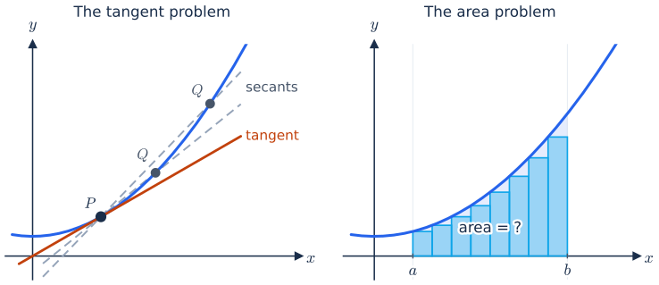
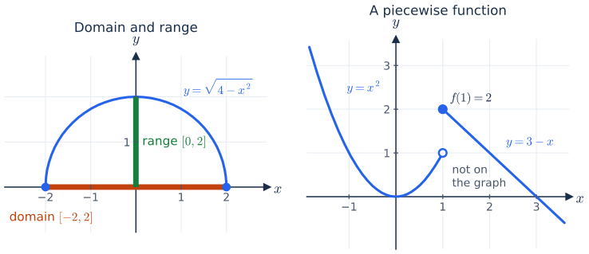
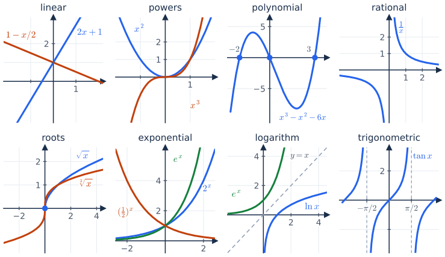
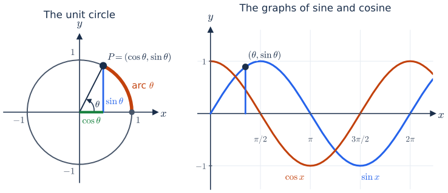
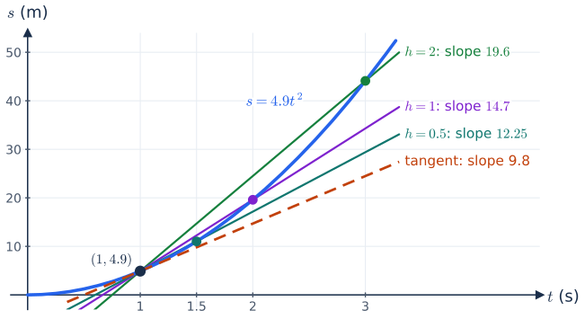

Calculus · Part I · Functions, limits and continuity
Module 1Functions and change
Learn what calculus is for, then build its raw material, functions, and the families of functions it uses most. You will finish by computing average speeds over shorter and shorter time intervals, the first step towards the derivative, and, if you like, by setting up Python to check your work.
⏱ 240 minYou need: School algebra (fractions, powers, equations, graphs of straight lines)
In this module you will
Explain the two central problems of calculus, rates of change and accumulation
Find the domain and range of a function and write them in interval notation
Recognise and sketch the standard functions, including exponentials, logarithms and the trigonometric functions in radians
Transform, compose and invert functions, and predict the effect on a graph
Compute average rates of change and simplify difference quotients
Set up Python with SymPy, NumPy and matplotlib, and use them to check your work
1
What calculus is about
Calculus is the mathematics of change. Whenever a quantity varies (the position of a car, the temperature of a cup of tea, the error of a machine-learning model as it trains), calculus asks two questions about it:
How fast is it changing at this instant? The answer is a rate of change.
How much has built up over a stretch of time, when the rate itself keeps changing? The answer is an accumulation.
Think of it like this
A car’s dashboard answers both questions. The speedometer shows how fast the distance travelled is changing at this instant; the odometer shows how much distance has built up. Add up the speedometer readings over time and you get the odometer reading; ask how fast the odometer reading grows and you get the speedometer reading. Calculus calls these processes integration and differentiation, and its central theorem, the Fundamental Theorem of Calculus (Module 10), says that each undoes the other.
The tangent problem and the area problem
The two questions become two problems about graphs (Figure 1.1).
The tangent problem. A straight line has one slope, but a curve is steeper in some places than in others. What is the slope of a curve at a point P? Draw the line through P and a second point Q of the curve, a secant line; its slope is easy to compute. Now let Q slide along the curve towards P. The secant lines settle on one line, the tangent line at P, and its slope is the slope of the curve at P. On a graph of distance against time, that slope is the speed at that instant.
The area problem. What is the area under a curve, between x=a and x=b? Fill the region with thin rectangles: their total area is easy to compute and close to the area wanted. Thinner rectangles fit better, and the area is the number that their totals approach. On a graph of speed against time, that area is the distance travelled.

Figure 1.1
The two problems of calculus. Left: as Q slides along the curve towards P, the secant lines through P and Q approach the tangent line at P. Right: as the rectangles under the curve between a and b get thinner, their total area approaches the area under the curve.
Both problems are solved by the same new idea: improve an approximation (the slope of a secant, a total of rectangles) step by step, and ask what number the approximations approach. That number is a limit, the subject of Module 2. The slope of the tangent is the derivative (Part II of the series); the area is the integral (Part III).
A short history
The area problem is ancient. Archimedes, in the 3rd century BC, found areas and volumes with the method of exhaustion, approximating a region by simpler shapes that fill it more and more completely: an ancestor of the rectangles in Figure 1.1.
Calculus as a general method arrived in the seventeenth century, from two people working independently. Newton developed his calculus, which he called the method of fluxions, in 1665–1666, but published it late. Leibniz published the first account of the differential calculus in 1684 and of the integral calculus in 1686; his notation, with dx and ∫, is the one used today. The priority dispute that followed was bitter. Later, Cauchy in the 1820s and Weierstrass in the 1860s and 1870s gave calculus its rigorous foundation, the ε–δ definition of a limit that Module 2 presents, and Riemann defined the integral named after him in 1854 (published in 1868).
Where calculus is used
In science, velocity is the rate of change of position and acceleration that of velocity, so the laws of motion, like those of cooling and radioactive decay, are statements about rates: differential equations (Module 13). In engineering, electric current is the rate of change of charge, and beams, control systems and signal filters are described with derivatives and integrals. In computing, machine learning trains a model by gradient descent, repeatedly adjusting its parameters in the direction that reduces its error fastest, a direction computed from derivatives (Modules 8 and 17); backpropagation, which computes those derivatives in neural networks, is the chain rule (Modules 5 and 17).
All these quantities are functions of something else, so this module studies functions (Sections 1.3 to 1.5) and then takes the first step towards the derivative (Section 1.6).
2
How this series works
Every idea arrives in the same order: a picture or a table of numbers, a precise definition, worked examples, and the mistakes that learners commonly make. The main theorems are proved; harder proofs and extensions sit in Going deeper boxes, which a first reading may skip.
The pages use these boxes:
Box
What it holds
Definition, Theorem, Example
a new term, a precise statement, a worked example
Proof
why a theorem is true; it ends with ∎
Key idea, Tip, Good to know
the point to remember, practical advice, a side remark
Watch out
a common mistake, why it is wrong, and the fix
Think of it like this
an analogy
Going deeper
optional, harder material
Try it
an interactive graph to experiment with
Compute it
optional Python
Boxes, sections and figures are numbered within each module: Definition 1.2 is the second definition of Module 1, and Figure 1.3 its third figure.
The Checked mark. Worked examples and exercise solutions carry the mark ✓ Checked: their results, and the steps that lead to them, were verified with SymPy, a computer algebra system. Tables of values are computed from their formulas, and figures are drawn by plotting the functions they show.
Exercises and quiz. Each module ends with a summary, 10 to 12 exercises and an 8-question quiz. The exercises come at three levels: ★ check your understanding, ★★ apply, ★★★ stretch (a proof, a harder problem or an application). Each has a full worked solution under Show solution: try the exercise first.
What you need. Paper, a pencil and a scientific calculator, set to radians (Section 1.4 explains why). Python is optional: Section 1.7 shows how to install it, and every output in the Compute it boxes is what the code printed. The rest of the series makes sense without Python.
If your algebra is rusty, first work through the Optional algebra refresher of Mathematical Foundations for Computer Science and AI. That series also has compact calculus modules aimed at computing, from its Module 15 on; this series is the full course.
Tip
Read with a pencil. When an example shows a step, do it yourself before you read on; when it says “expand and collect”, do the expanding.
3
Functions
Drop a ball from rest. Near the Earth’s surface, if air resistance is negligible, the distance it has fallen after t seconds is
s(t)=4.9t2 metres.
(The 4.9 is half of g≈9.8 m/s², the acceleration due to gravity.) Here is the distance at half-second intervals:
t
0
0.5
1
1.5
2
2.5
3
s(t)
0
1.225
4.9
11.025
19.6
30.625
44.1
Each time t gives exactly one distance s(t). That is what makes s a function.
Definition 1.1Function
A functionf is a rule that assigns to each number x in a set D exactly one number f(x). The set D is the domain of f. The number f(x), read “f of x”, is the value of f at x. The set of all values f(x), as x runs through the domain, is the range of f.
The input x is the independent variable and the output y=f(x) the dependent variable. In Parts I to IV of this series, inputs and outputs are real numbers, apart from a look at complex numbers in Module 15; the set of all real numbers is written R. To say that x belongs to a set D, write x∈D, read “x is in D”.
“Exactly one” is the heart of the definition. The rule “the number whose square is x” is not a function: for x=9 it gives two numbers, 3 and −3. A function may, however, give the same output for different inputs: x2 gives 4 for both x=2 and x=−2.
Intervals
Domains and ranges are usually intervals: all the real numbers between two ends.
Definition 1.2Intervals
For real numbers a<b:
Interval
The numbers x with
[a,b]
a≤x≤b
(a,b)
a<x<b
[a,b)
a≤x<b
(a,b]
a<x≤b
[a,∞)
x≥a
(a,∞)
x>a
(−∞,b]
x≤b
(−∞,b)
x<b
(−∞,∞)
every real x: this is R
A square bracket means that the endpoint belongs to the interval; a round bracket means that it does not.
[a,b] is a closed interval, read “the closed interval from a to b”; (a,b) is an open interval. The symbol ∞, read “infinity”, is not a number: [a,∞) is shorthand for “all x≥a”, so the bracket beside ∞ is always round. To join intervals, use ∪, read “union”: (−∞,2)∪(2,∞) is the set of numbers in either interval, that is, every real number except 2.
Watch out
Writing [3,∞) for “x>3”. The 3 is not included, so its bracket must be round: (3,∞). And never write [3,∞]:∞ is not a number, so it cannot belong to an interval.
The domain of a formula
When a function is given by a formula and nothing is said about its domain, the convention is this:
Key idea
The domain of a formula is the set of all real numbers for which the formula gives a real number. To find it, look for what could go wrong: so far, division by zero and the square root of a negative number (more generally, any even root). Section 1.4 adds a third: the logarithm of a number that is not positive.
A model can have a smaller domain than its formula. s(t)=4.9t2 is defined for every real t, but as a description of the falling ball it applies only from t=0, when the ball is dropped, until the ball lands.
Example 1.1Domains from formulas✓ Checked
Find the domain of each function, in interval notation.
(a) f(x)=x−21
(b) g(x)=3−x
(c) h(x)=x−1x
(a) The only danger is division by zero, which happens when x−2=0, that is, at x=2. Every other number is allowed: the domain is (−∞,2)∪(2,∞).
(b) The square root needs 3−x≥0, that is, x≤3 (add x to both sides). The domain is (−∞,3]. The 3 is included, because 0=0.
(c) Two conditions: x needs x≥0, and the denominator needs x=1. Both must hold, so the domain is [0,1)∪(1,∞).
Finding a range takes more work, because you must find which outputs actually occur. That takes two arguments: every value lies in the set you claim, and every number in that set is a value.
Example 1.2Domain and range of a semicircle✓ Checked
Find the domain and the range of f(x)=4−x2.
Domain. The square root needs 4−x2≥0, that is, x2≤4, which holds exactly when −2≤x≤2. The domain is [−2,2].
Range. For x in [−2,2],x2 lies between 0 and 4, so 4−x2 lies between 0 and 4, and its square root lies between 0=0 and 4=2. So every value is in [0,2]. Conversely, every y in [0,2] is a value. To find an input that gives it, solve y=4−x2 for x: squaring gives y2=4−x2, so try x=4−y2. This x lies in [0,2], and, since y≥0,
f(x)=4−(4−y2)=y2=y.
The range is [0,2]. Squaring y=4−x2 gives x2+y2=4 with y≥0. By Pythagoras’ theorem, x2+y2 is the square of the distance from (x,y) to the origin, so the points with x2+y2=4 form the circle of radius 2 centred at the origin, and the graph is its upper half. Figure 1.2 shows it with its domain and range.
Graphs
Definition 1.3Graph
The graph of a function f is the set of all points (x,f(x)) in the coordinate plane with x in the domain of f. It is the curve with equation y=f(x).
To read f(a) from a graph, go to x=a on the horizontal axis and then up or down to the graph: f(a) is the height there. The domain is the set of x where the graph has a point, its shadow on the x-axis; the range is its shadow on the y-axis.
The vertical line test. A curve in the plane is the graph of a function of x exactly when no vertical line meets it more than once: the line x=a meets the graph of f only at (a,f(a)) if a is in the domain, and not at all otherwise, and a second meeting point would give a two values. The whole circle x2+y2=4 fails the test: the line x=1 meets it at (1,3) and at (1,−3). Its upper half passes: it is the graph of Example 1.2.

Figure 1.2
Left: the graph of y=4−x2 from Example 1.2. Its shadow on the x-axis (orange) is the domain [−2,2]; its shadow on the y-axis (green) is the range [0,2]. Right: the piecewise function of Example 1.3. The filled dot at (1,2) is on the graph; the hollow dot at (1,1) is not.
Piecewise functions
A piecewise function uses different formulas on different parts of its domain. The most important one is the absolute value, ∣x∣, read “the absolute value of x”:
∣x∣={x−xif x≥0,if x<0.
It makes every number non-negative: ∣5∣=5 and ∣−3∣=−(−3)=3. Geometrically, ∣x∣ is the distance from x to 0 on the number line, and ∣a−b∣ the distance between a and b; the graph of ∣x∣ is a V with its corner at the origin. Neural networks use another piecewise function, the rectified linear unit:
ReLU(x)={0xif x<0,if x≥0.
It is the same as max(0,x), the larger of 0 and x.
Example 1.3A piecewise function✓ Checked
Let
f(x)={x23−xif x<1,if x≥1.
Find f(−1),f(0.5),f(1) and f(2), and sketch the graph.
For each input, first decide which piece applies, then use its formula.
−1<1, so f(−1)=(−1)2=1.
0.5<1, so f(0.5)=0.52=0.25.
1≥1, so f(1)=3−1=2. A boundary point belongs to the piece whose condition includes it, here the second.
2≥1, so f(2)=3−2=1.
The graph (Figure 1.2, right) is the parabola y=x2 to the left of x=1 and the line y=3−x from x=1 on. The parabola heads for the point (1,1), but x=1 is not in its piece, so a hollow dot marks the gap; the filled dot at (1,2) shows the value f(1)=2. The graph jumps at x=1.
Going deeperWhat a function is, precisely
Definition 1.1 speaks of a “rule”, but only the pairing of inputs with outputs matters. So mathematicians define a function to be its graph: a set f of ordered pairs (x,y) in which each x of the domain appears exactly once, with f(x)=y meaning that (x,y) belongs to f. Then (x+1)2 and x2+2x+1 define the same function. One also writes f:D→R, read “f maps D to R”.
A function in a program can read the clock, or a variable that other code changes, so equal inputs may give different outputs; it can also do things besides computing its output, such as printing. Programmers call a function pure if its output depends only on its input and it does nothing else; mathematical functions are pure.
4
A catalogue of functions
A handful of families supplies almost every function in this series; Figure 1.3 shows them, and the function explorer of Section 1.5 draws most of them. Learn their shapes: recognising a shape saves work throughout calculus.

Figure 1.3
The catalogue. Top row: lines with slopes 2 and −21; the powers x2 and x3; the cubic of Example 1.4 with its zeros −2, 0 and 3; the rational function 1/x. Bottom row: x and 3x; the exponentials 2x,ex and (21)x, all through (0,1);ex and its inverse lnx, mirror images in the line y=x; and tanx, undefined where cosx=0, as at x=±2π (dashed).
Linear functions
A linear function has the form f(x)=mx+b, where m and b are constants. Its graph is a straight line that crosses the y-axis at height b (the intercept) and has slopem. The slope is the change in y per unit change in x: for any two points (x1,y1) and (x2,y2) on the line (read “x one, y one” and so on), with x1=x2,
m=x2−x1y2−y1.
The answer does not depend on which two points you take: y2−y1=(mx2+b)−(mx1+b)=m(x2−x1), and dividing by x2−x1 leaves m.
So a linear function changes at the same rate everywhere: each step of 1 in x changes y by m. The conversion from degrees Celsius to degrees Fahrenheit, F=1.8C+32, is an example: a rise of 1 °C is a rise of 1.8 °F, whatever the temperature. For a line, “rate of change” needs no calculus. Calculus is what extends the idea to curves, whose steepness changes from point to point.
The line through (x1,y1) with slope m has the point-slope equationy−y1=m(x−x1). For example, the line through (1,3) and (4,9) has slope 4−19−3=2, so its equation is y−3=2(x−1), that is, y=2x+1.
Powers and polynomials
A power function is f(x)=xn. For n=1,2,3,… it is defined for every real x. Figure 1.3 shows the two basic shapes: x2 is a U-shaped parabola, symmetric about the y-axis, and x3 climbs through the origin, symmetric about the origin. Higher even powers (x4,x6,…) look like x2, and higher odd powers like x3, but flatter near 0 and steeper further out. Negative powers are reciprocals, x−n=1/xn, defined for x=0; fractional powers are roots (below).
The two symmetries have names. A function is even if f(−x)=f(x) for every x in its domain: its graph is its own mirror image in the y-axis. It is odd if f(−x)=−f(x): a half turn about the origin leaves its graph unchanged. x2 is even, since (−x)2=x2;x3 is odd, since (−x)3=−x3.
Definition 1.4Polynomial
A polynomial is a function of the form
p(x)=anxn+an−1xn−1+⋯+a1x+a0,
where n≥0 is a whole number and the coefficientsa0,a1,…,an are constants. If an=0, the polynomial has degreen. Its domain is R.
Polynomials of degree 1, 2 and 3 are linear, quadratic and cubic. A number r with p(r)=0 is a zero (or root) of p: the graph meets the x-axis at x=r. Factoring finds zeros.
Example 1.4Zeros of a cubic✓ Checked
Find the zeros of p(x)=x3−x2−6x.
Every term contains x, so take it out: p(x)=x(x2−x−6). To factor the quadratic, look for two numbers with product −6 and sum −1: they are −3 and 2. So
p(x)=x(x−3)(x+2).
A product is 0 exactly when one of its factors is 0, so the zeros are x=0,x=3 and x=−2. Check by expanding: x(x−3)(x+2)=x(x2−x−6)=x3−x2−6x. The graph in Figure 1.3 meets the x-axis at these three points.
Rational functions
Definition 1.5Rational function
A rational function is a quotient f(x)=q(x)p(x) of two polynomials, where q is not the zero polynomial. Its domain is the set of all x with q(x)=0.
The simplest is f(x)=1/x, with domain (−∞,0)∪(0,∞). Its graph (Figure 1.3) has two branches. Near x=0 the values become huge, positive on the right and negative on the left; far from 0 they shrink towards 0. Module 3 studies such behaviour.
Example 1.5A rational function with a hole✓ Checked
Find the domain of r(x)=x2−x−2x2−4, and simplify the formula.
Factor the top and the bottom: x2−4=(x−2)(x+2) (a difference of squares) and x2−x−2=(x−2)(x+1). The denominator is 0 at x=2 and at x=−1, so the domain is (−∞,−1)∪(−1,2)∪(2,∞).
For x in the domain, x−2=0, so you may cancel it: for x=2 and x=−1,
r(x)=(x−2)(x+1)(x−2)(x+2)=x+1x+2.
The conditions matter. The formula x+1x+2 makes sense at x=2, where it gives 34, but r(2) is not defined. So the graph of r is the graph of x+1x+2 with one point missing: a hole at (2,34). What r does near x=2 is the kind of question that limits answer (Module 2).
Watch out
Cancelling a factor can change the domain: carry the condition along, as in r(x)=x+1x+2 for x=2. And cancel common factors, never terms: x+1x+2 is not 12.
Roots
For x≥0, the square rootx is the non-negative number whose square is x. So 9=3, not ±3. The equation x2=9 has two solutions, 9=3 and −9=−3, but the symbol 9 means only the first. The domain and the range of x are both [0,∞); its graph is half of a parabola lying on its side (Figure 1.3).
The cube root3x is the number whose cube is x. Every real number has exactly one real cube root, so the domain is R:38=2 and 3−8=−2. In general the nth root nx is defined for every x when n is odd, and for x≥0 when n is even. Roots are powers with fractional exponents: x1/n=nx and xm/n=(nx)m (with m/n in lowest terms), so 82/3=22=4. For a negative x, this series follows most calculus books and reads x1/3 as the real cube root; Python and SymPy do not, as Section 1.7 shows.
Watch out
x2 is not always x. For x=−3,(−3)2=9=3. The square root is never negative, so
x2=∣x∣for every real x,
and x2=x only when x≥0. Nor do roots split over sums: 9+16=25=5, not 9+16=7.
Exponential functions
In a power function such as x2 the variable is the base. Put it in the exponent instead and you get an exponential functionf(x)=ax, with a fixed base a>0. The laws of exponents hold for all bases a,b>0 and all real numbers x and y:
For whole-number exponents they follow from counting factors, as in 23⋅22=(2⋅2⋅2)(2⋅2)=25; fractional exponents are roots, a1/2=a; and for an irrational exponent such as 2=1.41421…,a2 is the number that a1.4,a1.41,a1.414,… approach. So ax is defined, and positive, for every real x.
If a>1,ax grows: 2x doubles with every step of 1 in x. If 0<a<1, it decays: (21)x halves with every step. Every exponential passes through (0,1), because a0=1. For a=1 the domain is R and the range is (0,∞).
The number e. One base is special: the number
e=2.718281828…,
known as Euler’s number. Like π it is irrational: its decimals never end and never repeat. The function ex, read “e to the x”, is called the exponential function, because the formulas of calculus are simplest with base e; Module 6 shows where e comes from and why. For now, e is a number between 2 and 3, e≈2.71828, so the graph of ex lies between those of 2x and 3x.
x
2x
ex
(21)x
−2
0.25
0.13534
4
−1
0.5
0.36788
2
0
1
1
1
1
2
2.7183
0.5
2
4
7.3891
0.25
3
8
20.086
0.125
Example 1.6A doubling model✓ Checked
Suppose a colony of bacteria starts with 1000 cells and doubles every 3 hours. (The numbers are made up, but real colonies grow like this while food and space last.) After t hours it has
N(t)=1000⋅2t/3
cells. Find N(0),N(3),N(12) and N(1), and show that N(t+3)=2N(t) for every t.
N(0)=1000⋅20=1000,N(3)=1000⋅21=2000 and N(12)=1000⋅24=16,000. For N(1) you need a calculator: N(1)=1000⋅21/3≈1259.9, about 1260 cells.
So the colony doubles every 3 hours, whenever you start the clock. That is the signature of exponential growth: equal steps in time multiply the quantity by equal factors.
Watch out
Two classic slips. First, x2 and 2x are different functions: in x2 the variable is the base, in 2x it is the exponent, and at x=10 they are 100 and 1024. Second, exponents do not split over sums: 2x+3=2x⋅23=8⋅2x, not 2x+23.
Logarithms
The exponential function answers questions like “what is 25?” The logarithm answers the reverse question: “what power of 2 gives 32?”
Definition 1.6Logarithm
Let a>0 with a=1. For x>0, the logarithm of x to base a, written logax and read “log to base a of x”, is the number y with ay=x:
logax=ymeansay=x.
The natural logarithmlnx, read “the natural log of x”, is the logarithm to base e:lnx=y means ey=x.
For example, log232=5 because 25=32;log101000=3;log241=−2 because 2−2=41;ln1=0 because e0=1; and lne=1. Since ay is always positive, the logarithm of 0 or of a negative number is not defined: the domain of ln is (0,∞), and its range is R.
The logarithm undoes the exponential, and the exponential undoes the logarithm:
elnxln(ey)=xfor x>0,=yfor every real y.
In the language of Section 1.5, ln is the inverse function of ex, and the graph of lnx is the graph of ex reflected in the line y=x (Figure 1.3).
Theorem 1.1Laws of logarithms
For all x>0,y>0 and every real number r:
ln(xy)lnyxln(xr)=lnx+lny,=lnx−lny,=rlnx.
The same laws hold for loga, for any base a>0 with a=1.
Proof
Let p=lnx and q=lny, so that ep=x and eq=y. By the laws of exponents, ep+q=epeq=xy. So p+q is the power of e that gives xy, which is what ln(xy)=p+q says. In the same way, ep−q=ep/eq=x/y gives the second law, and erp=(ep)r=xr gives the third. The same argument works with any base a in place of e.
∎
Two consequences follow. To convert between bases, write y=logax, so that ay=x; take ln of both sides and use the third law: ylna=lnx. Since a=1,lna=0, and
logax=lnalnx.
And to solve an equation with the unknown in an exponent, take logarithms of both sides (Example 1.7).
In computing, log2n counts halvings. Binary search in a sorted list of n items halves the part still to be searched at every step, so it takes about log2n steps: only about 20 for a million items, since log2106≈19.93.
Example 1.7Solving an exponential equation✓ Checked
When does the colony of Example 1.6 reach 10,000 cells?
Solve 1000⋅2t/3=10,000. Divide by 1000: 2t/3=10. Take the natural logarithm of both sides and use the third law:
3tln2=ln10,sot=ln23ln10≈9.966.
The colony passes 10,000 cells after about 9.97 hours, a little under 10 hours. Check: 9.966/3=3.322, and 23.322≈10.00.
Watch out
The laws of logarithms are about products, quotients and powers, not sums: ln(x+y) is not lnx+lny, and lnylnx is not lnyx. The laws also need positive inputs: for every x=0,ln(x2)=2ln∣x∣, which is not 2lnx when x<0, where lnx is not even defined. Watch the notation too: some books and calculators write logx for log10x, while others, and Python, write logx for lnx. This series always writes the base, except in ln.
Trigonometric functions
School trigonometry measures angles in degrees. Calculus measures them in radians.
Definition 1.7Radian
The unit circle is the circle of radius 1 centred at the origin. An angle at its centre that cuts off an arc of length θ on the unit circle measures θradians. (The letter θ is the Greek “theta”.) Angles are measured from the positive x-axis, anticlockwise for positive angles and clockwise for negative ones.
The circumference of the unit circle is 2π, so a full turn is 2π radians: 360∘=2π and 180∘=π. To convert degrees to radians, multiply by π/180. So 90∘=π/2,60∘=π/3,45∘=π/4 and 30∘=π/6, and one radian is 180∘/π≈57.30∘.
Radians make calculus simplest: for a small angle θ in radians, sinθ is almost exactly θ (sin0.01≈0.0099998), and Module 5 shows that the rate of change of sinx is then cosx, with no stray factor π/180. From now on, angles are in radians unless a page says otherwise.
Definition 1.8Sine and cosine
Let θ be any real number, and let P be the point of the unit circle reached by turning from (1,0) through θ radians. Then cosθ, the cosine of θ, is the x-coordinate of P, and sinθ, the sine of θ, is its y-coordinate:
P=(cosθ,sinθ).
The other four trigonometric functions are defined from these two, wherever the denominator is not 0:
They are read “tangent”, “cotangent”, “secant” and “cosecant” (the first and third share their names with the lines of Section 1.1). For 0<θ<π/2, the origin, P and the point (cosθ,0) below it form a right triangle with hypotenuse 1, so these definitions agree with the school ones, “opposite over hypotenuse” and “adjacent over hypotenuse”; but the unit-circle definition works for every angle.

Figure 1.4
Left: the point P at angle θ on the unit circle has coordinates (cosθ,sinθ); the orange arc has length θ. Right: the graphs of sinx and cosx. The blue segment has height sinθ in both panels: as P goes round the circle, its height traces the sine curve.
Everything about sine and cosine can be read from the circle:
Range.P is on a circle of radius 1, so the domain of sin and of cos is R and their range is [−1,1].
The Pythagorean identity.P lies on the circle x2+y2=1, so for every θ
sin2θ+cos2θ=1,
where sin2θ means (sinθ)2.
Periodicity. Adding 2π to θ takes P once round the circle, so sin(θ+2π)=sinθ and cos(θ+2π)=cosθ: sine and cosine are periodic with period 2π (Figure 1.4). The tangent has period π (the formulas for π+θ below show why); it is undefined where cosθ=0, at θ=π/2+kπ for every integer k.
Symmetry. Turning through −θ gives the mirror image of P in the x-axis, so cos(−θ)=cosθ and sin(−θ)=−sinθ: cosine is even and sine is odd.
The exact values at the standard angles come from two triangles of school geometry, each with hypotenuse 1. Cutting a square along a diagonal gives a right triangle with two angles of π/4; its two shorter sides are equal, say s, and Pythagoras’ theorem gives 2s2=1, so s=1/2=2/2. Cutting an equilateral triangle with sides 1 in half gives a right triangle with angles π/6 and π/3; its shortest side, opposite π/6, is 21, and Pythagoras’ theorem gives the third side, 1−41=3/2. Opposite over hypotenuse and adjacent over hypotenuse then give the middle three rows of the table; the first and last rows are the points (1,0) and (0,1) of the unit circle:
θ
sinθ
cosθ
tanθ
0
0
1
0
π/6
1/2
3/2
1/3
π/4
2/2
2/2
1
π/3
3/2
1/2
3
π/2
1
0
undefined
For other angles, use the symmetry of the circle. The point at angle π−θ is the mirror image in the y-axis of the point at angle θ, and the point at angle π+θ is its reflection through the origin, so
Find the exact values of sin,cos and tan at θ=2π/3, and the point of the unit circle at that angle.
2π/3 is 120∘, and 2π/3=π−π/3. By the mirror symmetry in the y-axis,
sin32πcos32π=sin3π=23,=−cos3π=−21,
so
tan32π=−1/23/2=−3.
The point is (−21,23): left of the y-axis and above the x-axis, as an angle of 120∘ should be. Check with the Pythagorean identity: (23)2+(−21)2=43+41=1.
Good to know
Two identities from school trigonometry, the addition formulas, are used from Module 5 on:
Three common slips with trigonometric functions. A calculator in degree mode gives sin30=0.5; in radians, sin30≈−0.988, since 30 radians is almost five turns. sinx2 means sin(x2), while sin2x means (sinx)2. And sin(x+y) is not sinx+siny: use the addition formula.
5
New functions from old
Shifting and stretching graphs
Compare f(x)=x2 with g(x)=(x−2)2. At x=5,g gives 32=9, the value that f has at x=3; at x=2,g gives 0, the value of f at 0. In general g(x)=f(x−2):g does at x what f did two units earlier. So the whole graph moves 2 units to the right.
Each simple change to a formula moves the graph in a simple way. For a constant c>0:
Formula
The graph of y=f(x) is
f(x)+c,f(x)−c
shifted up, down by c
f(x−c),f(x+c)
shifted right, left by c
cf(x)
stretched vertically by the factor c (squashed if c<1)
f(cx)
squashed horizontally by the factor c (stretched if c<1)
−f(x)
reflected in the x-axis
f(−x)
reflected in the y-axis
Changes outside f act the way they look. Changes inside f act the opposite way, because the new function reaches each value of f at a different x:f(x−c) moves the graph right, and f(2x) reaches the value that f has at 6 already at x=3, so everything happens twice as early and the graph is squashed towards the y-axis.
Try it
Choose a function, then move one slider at a time: the sliders give y=af(b(x−c))+d, and the dashed curve is the original y=f(x). Predict each move before you make it. With f(x)=x2, set c=1, then d=2, and follow the bottom of the U; set a=−1 to flip the graph. Press Reset, choose sinx and set b=2: two waves now fit where there was one. Then build the function of Example 1.9.
Example 1.9Building a graph from y=x2✓ Checked
Describe how to obtain the graph of g(x)=−(x+2)2+4 from the graph of y=x2. Find the highest point of the graph of g, its zeros and the range of g.
Build g in three steps, following the bottom point (0,0) of the parabola:
(x+2)2 is x2 with x+2 in place of x: shift left by 2. The point (0,0) moves to (−2,0).
−(x+2)2: reflect in the x-axis. The parabola now opens downwards, and (−2,0) stays where it is.
−(x+2)2+4: shift up by 4. The point moves to (−2,4).
So the graph is an upside-down parabola with its highest point at (−2,4). For the zeros, −(x+2)2+4=0 means (x+2)2=4, so x+2=2 or x+2=−2, that is, x=0 or x=−4. Since (x+2)2≥0, every value of g is at most 4. Conversely, every number y≤4 is a value: g(x)=y means (x+2)2=4−y, which holds at x=−2+4−y. So the range is (−∞,4]. In the explorer: f(x)=x2,a=−1,c=−2,d=4.
Watch out
f(x−3) moves the graph 3 units to the right, not to the left: the minus sign inside f works against intuition. Check with one point: the value f(0) is now reached at x=3.
Composition
To compute x2+1, you first square and add 1, then take the square root: the function is a chain of two simpler ones, g(x)=x2+1 followed by f(u)=u.
Definition 1.9Composition
The compositionf∘g, read “f composed with g” or “f after g”, is the function
(f∘g)(x)=f(g(x)).
Its domain is the set of all x in the domain of g for which g(x) is in the domain of f.
The function written next to x acts first: in f∘g, first g, then f. In a program, composition is a pipeline in which the output of one function becomes the input of the next; a neural network is a long composition of simple functions, its layers.
Example 1.10Composition in both orders✓ Checked
Let f(x)=x and g(x)=x−3. Find f∘g and g∘f with their domains, and evaluate both at x=7.
(f∘g)(x)=f(x−3)=x−3. Here g accepts every x, and f needs its input x−3 to be at least 0, so the domain is [3,∞).
(g∘f)(x)=g(x)=x−3. Here f needs x≥0, and g accepts any input, so the domain is [0,∞).
At x=7:(f∘g)(7)=4=2, while (g∘f)(7)=7−3≈−0.354. The two orders give different functions, with different domains: in composition, order matters.
Seeing a complicated function as a composition is a skill that the chain rule of Module 5 depends on. For example, h(x)=(2x+1)5 is f(g(x)) with inner functiong(x)=2x+1 and outer functionf(u)=u5; and e−x2 is f(g(x)) with g(x)=−x2 and f(u)=eu.
Watch out
The domain of a composition comes from its pieces, not from the simplified formula. With f(x)=x2 and g(x)=x,(f∘g)(x)=(x)2=x, but only for x≥0:g(−4) is not defined, so neither is f(g(−4)).
Inverse functions
The formula F=1.8C+32 turns degrees Celsius into degrees Fahrenheit, and C=(F−32)/1.8 turns them back: 100 °C becomes 212 °F, and 212 °F becomes 100 °C again. Each formula undoes the other. Not every function can be undone: x2 sends both 2 and −2 to 4, so the output 4 does not tell you the input.
Definition 1.10One-to-one function
A function f is one-to-one if different inputs always give different outputs: whenever x1=x2,f(x1)=f(x2).
A horizontal line y=k meets the graph of f where f(x)=k, so f is one-to-one exactly when no horizontal line meets its graph more than once: the horizontal line test. x3 and ex pass it; x2 and sinx fail it.
Definition 1.11Inverse function
Let f be a one-to-one function with domain D and range R. Its inverse functionf−1, read “f inverse”, has domain R and range D, and is defined by
f−1(y)=xexactly whenf(x)=y.
In words, f−1 sends each output of f back to the input it came from. So the two undo each other:
f−1(f(x))f(f−1(y))=xfor every x in D,=yfor every y in R.
ex and lnx are the pair you met in Section 1.4: ln(ex)=x for every real x, and elny=y for every y>0.
Watch out
f−1(x) does not mean f(x)1: here the −1 is not an exponent but part of the name of the inverse. For f(x)=2x,f−1(x)=x/2, while 1/f(x)=1/(2x). When you mean the reciprocal, write f(x)1 or (f(x))−1.
To find a formula for f−1, write y=f(x) and solve for x. If each y in the range comes from exactly one x, then f is one-to-one and the solution is x=f−1(y). At the end, rename y as x, so that x is the input of f−1 as usual.
Example 1.11Finding an inverse✓ Checked
Show that f(x)=x−2x+1, with x=2, is one-to-one, and find its range and its inverse.
Write y=x−2x+1 and solve for x. Multiply both sides by x−2, collect the terms with x on the left, and factor:
y(x−2)yx−xx(y−1)=x+1=2y+1=2y+1.
If y=1, the last line says 0=3, which is impossible: the value 1 is never reached. If y=1, divide by y−1:
x=y−12y+1.
This x is never 2 (that would need 2y+1=2y−2, that is, 1=−2), so it is in the domain. Each y=1 therefore comes from exactly one x:f is one-to-one, its range is (−∞,1)∪(1,∞), and, renaming y as x,
f−1(x)=x−12x+1,x=1.
Check one value: f(3)=4/1=4, and f−1(4)=9/3=3.
The graph of an inverse comes free with the graph of f.
Theorem 1.2The graph of an inverse
If f is one-to-one, the graph of f−1 is the reflection of the graph of f in the line y=x.
Proof
A point (p,q) lies on the graph of f exactly when f(p)=q, that is, exactly when f−1(q)=p, that is, exactly when (q,p) lies on the graph of f−1. So the graph of f−1 consists of the points of the graph of f with their coordinates swapped. Swapping the coordinates is reflection in the line y=x: if p=q, the midpoint (2p+q,2p+q) of (p,q) and (q,p) lies on the line, and the segment joining them has slope q−pp−q=−1, so it is perpendicular to the line, whose slope is 1. If p=q, the point is on the line and is its own mirror image.
∎
A function that fails the horizontal line test can often be made one-to-one by restricting its domain: on [0,∞),x2 is one-to-one, and its inverse is x. Reflecting the right half of the parabola in y=x gives the half parabola lying on its side.
6
Average rates of change
Back to the falling ball and its table in Section 1.3. Between t=1 and t=3 it falls s(3)−s(1)=44.1−4.9=39.2 metres in 2 seconds, an average speed of 39.2/2=19.6 metres per second (m/s). Between t=1 and t=2 it falls 19.6−4.9=14.7 metres in 1 second: 14.7 m/s. The ball is speeding up, so the average depends on the interval. What is its speed at the instant t=1, the number a speedometer on the ball would show?
Definition 1.12Average rate of change
The average rate of change of f over the interval [a,b] is
b−af(b)−f(a)=ΔxΔy.
Δ is the Greek capital delta, used for “change in”: Δx=b−a is the change in the input, Δy=f(b)−f(a) the change in the output, and Δy/Δx is read “delta y over delta x”. Its units are output units per input unit: metres per second for the ball, degrees per minute for a cooling cup of tea.
Geometrically, Δy/Δx is the slope of the secant line through the points (a,f(a)) and (b,f(b)) of the graph. For a linear function every secant is the line itself, so the average rate of change over every interval is the slope m. For a curve it depends on the interval, as Figure 1.5 shows.

Figure 1.5
The falling ball, s(t)=4.9t2. The secant lines from (1,4.9) to the points at t=1+h, for h=2, 1 and 0.5, have slopes 19.6, 14.7 and 12.25: the average speeds over [1,3],[1,2] and [1,1.5]. As h shrinks, the secants approach the dashed tangent line at t=1, whose slope is 9.8.
The difference quotient
To study rates over shorter and shorter intervals, fix the starting point a and call the length of the interval h.
Definition 1.13Difference quotient
For a function f, a number a and a number h=0, with a and a+h in the domain of f, the difference quotient is
hf(a+h)−f(a).
It is the average rate of change of f between a and a+h: over [a,a+h] if h>0, and over [a+h,a] if h<0.
Example 1.12The difference quotient of the falling ball✓ Checked
Simplify the difference quotient of s(t)=4.9t2 at t=1.
Substitute 1+h for t, keeping the brackets, and expand:
s(1+h)=4.9(1+h)2=4.9(1+2h+h2)=4.9+9.8h+4.9h2.
Subtract s(1)=4.9: the constant terms cancel, and s(1+h)−s(1)=9.8h+4.9h2. Every remaining term contains h, so dividing by h (allowed, since h=0) gives
hs(1+h)−s(1)=h9.8h+4.9h2=9.8+4.9h(h=0).
For h=2, 1 and 0.5 this gives 19.6, 14.7 and 12.25, the slopes in Figure 1.5.
Shrinking the interval
Now let h shrink. The table shows the change in distance, s(1+h)−s(1), and the average speed over intervals that start at t=1 (h>0) or end there (h<0). For h<0 the change is negative, because s(1+h) is the earlier position, and dividing it by the negative h gives a positive speed:
h
s(1+h)−s(1)
hs(1+h)−s(1)
1
14.7
14.7
0.1
1.029
10.29
0.01
0.09849
9.849
0.001
0.0098049
9.8049
−0.001
−0.0097951
9.7951
−0.01
−0.09751
9.751
−0.1
−0.931
9.31
−1
−4.9
4.9
As h shrinks towards 0, from either side, the average speeds settle down to 9.8 m/s. The formula 9.8+4.9h of Example 1.12 shows why: the term 4.9h shrinks to nothing. It is natural to call 9.8 m/s the speed of the ball at the instant t=1, its instantaneous speed. In Figure 1.5 it is the slope of the tangent line.
Key idea
The instantaneous rate of change is the number that the average rates of change approach as the interval shrinks. You cannot set h=0 in the difference quotient, which would become 0/0; instead you watch what happens as h gets close to 0. Module 2 makes “approach” precise: it is the idea of a limit. Module 4 calls the result the derivative.
Watch out
When you substitute a+h into a formula, replace every x and keep the brackets. For f(x)=x2,f(1+h)=(1+h)2=1+2h+h2. It is not f(1)+h=1+h, and it is not f(1)+f(h)=1+h2. Losing the middle term 2h is the most common error in difference quotients.
7
Setting up Python
This section is optional: you need Python only for the Compute it boxes. Three free packages turn the Python programming language into a mathematical workbench: SymPy does exact algebra and calculus with symbols, NumPy computes with arrays of numbers, and matplotlib draws graphs.
The outputs on these pages were produced with Python 3.11.18, SymPy 1.14.0, mpmath 1.3.0, NumPy 2.4.6 and matplotlib 3.11.2. At the time of writing (November 2026) the latest Python is 3.15.2; the current NumPy (2.5.5) needs Python 3.12 or later and the current matplotlib (3.11.2) needs 3.11 or later, and both offer ready-built packages for Python 3.12 to 3.15 on Windows, macOS and Linux. Newer versions may print some results differently, for example with terms in another order.
Install Python
In a web browser, open python.org/downloads and click Download Python install manager. (The Python install manager is also in the Microsoft Store; the two versions are identical.)
Double-click the downloaded file and select Install. This gives you the commands python, py and pymanager.
Open PowerShell from the Start menu and type python. If no Python runtime is installed yet, the install manager installs the latest release automatically. When Python starts, it shows its prompt >>>; type exit() and press Enter to leave it.
Terminal
PS> python
When you first install a runtime, you will probably be asked whether to add a folder, %LocalAppData%\Python\bin, to your PATH. This is optional, because this series uses the py command, which works either way.
Many guides still describe the traditional full installer. It has been deprecated since Python 3.14 and will not be produced for Python 3.16 or later, so this page uses the install manager.
In a web browser, open python.org/downloads and download the macOS installer package (.pkg) of the latest release. It is a universal2 build, for both Apple Silicon and Intel Macs.
Double-click it. Click Continue (the Read Me), Continue and Agree (the licence), then Install. Installing needs an administrator account.
To finish, double-click Install Certificates.command in the /Applications/Python 3.15/ window.
Open Terminal and check the version:
Terminal
$ python3 --version
You start the new Python with python3 (or python3.15). macOS also has its own /usr/bin/python3, which belongs to Apple and is usually older: do not modify or delete it.
Python comes preinstalled on most Linux distributions. You need two extra parts, venv (virtual environments) and pip (the package installer). On Debian and Ubuntu:
On Fedora, sudo dnf install python3-pip python3-wheel; on Arch, sudo pacman -S python-pip. Then check the version:
Terminal
$ python3 --version
Python 3.12 or later lets pip install the current versions of all three packages; Python 3.11, which produced the outputs on these pages, works too.
Create a virtual environment
A virtual environment is a folder with its own set of Python packages, kept apart from the rest of your computer: packages that you install while it is active go into that folder, and deleting the folder removes them. Create one for this series, in the folder where you keep your work, and activate it:
If PowerShell refuses to run Activate.ps1, run Set-ExecutionPolicy -ExecutionPolicy RemoteSigned -Scope CurrentUser once, then activate again. (In the older Command Prompt, the second command is calculus_env\Scripts\activate.)
deactivate leaves the environment. Each time you open a new terminal to work on the series, go to the same folder and activate the environment again with the second command.
Install SymPy, NumPy and matplotlib
With the environment active, check that pip, Python’s package installer, works, and then install the three packages:
Installing SymPy also installs mpmath, which SymPy uses for numbers with many digits.
To run Python code, start Python in the activated environment, with py on Windows or python3 on macOS and Linux, and type the lines at the prompt >>>; or save them in a file such as first.py and run py first.py or python3 first.py. All the code of the series is in calculus-code.zip, one script per module.
If something went wrong
macOS: python3 --version shows an older version than the one you installed. That is Apple’s own Python. Use python3.15 in place of python3 to create the environment (python3.15 -m venv calculus_env); once the environment is active, python3 is the right one. Leave Apple’s Python alone.
Linux: python3 -m venv fails. On Debian and Ubuntu, install the missing parts with sudo apt install python3-venv python3-pip and try again.
ModuleNotFoundError: No module named 'sympy'. Python cannot find the packages, usually because the environment is not active in this terminal. Activate it and try again; if the error remains, install the packages again with the environment active.
A first session
The four boxes below revisit this module with Python; compare what you see with the outputs shown.
Compute itSymbols, substitution, factoring and expanding
SymPy works with symbols, names for unknown numbers, which you create with symbols. Then you can build expressions, substitute numbers into them with subs, and factor and expand them:
Python
import sympy as sp
x = sp.symbols('x') # x is now a symbol, a name for a number
p = x**3 - x**2 - 6*x # ** is a power; write * for every productprint(p.subs(x, 4)) # substitute 4 for x: p(4)print(sp.factor(p))
print(sp.expand((x + 2)*(x - 3)))
Output
24
x*(x - 3)*(x + 2)
x**2 - x - 6
The polynomial is the one of Example 1.4. The three lines are its value p(4)=64−16−24=24, its factored form, and the product (x+2)(x−3) expanded. Powers need **: in Python the symbol ^ means something else.
Pythonraises an error on purpose
print(x^2)
Error
TypeError: unsupported operand type(s) for ^: 'Symbol' and 'int'
Between whole numbers, ^ combines their binary digits, so 2^3 is 1, without complaint. Next, simplify looks for a simpler form of an expression; try it on the rational function of Example 1.5:
Python
r = (x**2 - 4)/(x**2 - x - 2)
print(sp.simplify(r))
print(r.subs(x, 2))
Output
(x + 2)/(x + 1)
nan
SymPy cancels the factor x−2 without mentioning that x=2: the pitfall of Section 1.4 is yours to remember. Substituting 2 into r itself gives nan, “not a number”, since it is 0/0.
Compute itExact numbers and decimals
SymPy keeps numbers exact unless you ask for decimals. Write 4.9 as the fraction sp.Rational(49, 10) and let SymPy simplify the difference quotient of Example 1.12:
Python
import sympy as sp
t, h = sp.symbols('t h')
s = sp.Rational(49, 10)*t**2# 4.9 t^2, with 4.9 kept exact
q = (s.subs(t, 1 + h) - s.subs(t, 1))/h # the difference quotient at t = 1print(q)
print(sp.simplify(q))
Output
(49*(h + 1)**2/10 - 49/10)/h
49*h/10 + 49/5
1049h+549 is 4.9h+9.8, the answer of Example 1.12, with the terms in SymPy’s order. sp.N turns an exact number into a decimal, with 15 significant digits unless you ask for more:
Python
print(sp.sqrt(8), sp.N(sp.sqrt(8)))
print(sp.N(sp.E), sp.N(sp.pi, 30))
print(sp.N(3*sp.log(10)/sp.log(2), 4)) # Example 1.7; log is ln
Three lessons. Python’s trigonometric functions work in radians; math.radians converts degrees. Floating-point results can be off in the last digit, so sin(π/6) comes out a hair below 0.5 (SymPy’s sp.sin(sp.pi/6) is exactly 1/2); Module 2 shows when such errors matter. And math.log is ln. Two more surprises:
Python
print((-8)**(1/3))
print(math.cbrt(-8))
Output
(1.0000000000000002+1.7320508075688772j)
-2.0
Python raises a negative number to a fractional power as a complex number (the j marks its imaginary part), not as the real cube root −2 that this series means by (−8)1/3;math.cbrt gives the real cube root. SymPy, too, takes the complex root unless you ask for the real one:
Python
import sympy as sp
print(sp.root(-8, 3), sp.real_root(-8, 3))
Output
2*(-1)**(1/3) -2
In 2*(-1)**(1/3), the factor (-1)**(1/3) stands for a complex number, not for −1. And outside the domain of a function, Python refuses:
Pythonraises an error on purpose
print(math.sqrt(-4))
Error
ValueError: math domain error
Python 3.11 calls this a “math domain error”; other versions may word the message differently.
Compute itNumbers and pictures: lambdify, NumPy and matplotlib
sp.lambdify turns a SymPy formula into a fast numerical function, which accepts a NumPy array, a list of numbers that arithmetic acts on all at once:
Python
import sympy as sp
import numpy as np
t = sp.symbols('t')
s = sp.lambdify(t, 4.9*t**2) # the formula as a numerical function
ts = np.linspace(0, 3, 7) # 7 equally spaced times from 0 to 3print(ts)
print(s(ts)) # s at all seven times at once
The exact values are 10.29, 9.849 and 9.8049, so the computer’s answers are wrong in their last few digits. Module 2 explains why, and why the error grows if h shrinks much further. Finally, a graph:
A window opens with the graph of s: the curve of Figure 1.5, without its secant lines. Close the window to finish.
8
What you learned
Calculus studies how fast quantities change (the tangent problem, leading to derivatives) and how much builds up (the area problem, leading to integrals); both are answered with limits.
A function assigns to each input in its domain exactly one output; the range is the set of outputs. Intervals such as [0,2] and (−∞,2)∪(2,∞) describe domains and ranges.
The domain of a formula leaves out division by zero, even roots of negative numbers and logarithms of numbers that are not positive; a model may restrict it further.
The graph of f is the set of points (x,f(x)); no vertical line meets it twice. Piecewise functions use different formulas on different parts of the domain, with filled and hollow dots at the boundaries.
The catalogue: linear functions (constant rate of change m), powers and polynomials, rational functions, roots, exponentials ax and ex with e≈2.71828, logarithms with ln the inverse of ex, and the trigonometric functions, defined from the unit circle in radians.
For c>0,f(x−c) shifts a graph c units right and f(x)+c shifts it c units up; for c>1,cf(x) stretches it vertically and f(cx) squashes it horizontally. (f∘g)(x)=f(g(x)) applies g first. A one-to-one function has an inverse, whose graph is the mirror image in y=x.
The average rate of change (f(b)−f(a))/(b−a) is the slope of a secant line, and the difference quotient (f(a+h)−f(a))/h is the average rate over an interval of length h. As h shrinks, it approaches the instantaneous rate: the idea behind limits (Module 2) and derivatives (Module 4).
SymPy (symbols, subs, expand, factor, simplify, N, lambdify), NumPy and matplotlib check and explore all of this; floating-point arithmetic is approximate in its last digits.
9
Exercises
Exercise 1.1★Domains in interval notation
Find the domain of each function, and write it in interval notation.
(a) f(x)=5−2x
(b) g(x)=x2−91
(c) h(x)=xln(x+4)
Show solution✓ Checked
(a) The square root needs 5−2x≥0, that is, 2x≤5, that is, x≤25. The domain is (−∞,25], with 25 included because 0=0.
(b) The denominator must not be 0. x2−9=0 when x2=9, at x=3 and at x=−3. The domain is (−∞,−3)∪(−3,3)∪(3,∞). Forgetting x=−3 is the common slip: x2=9 has two solutions.
(c) Two conditions. The logarithm needs x+4>0, that is, x>−4; the division needs x=0. The domain is (−4,0)∪(0,∞). The −4 is excluded, because ln0 is not defined.
Exercise 1.2★Reading a piecewise function
Let
f(x)={2x+1x2−1if x≤1,if x>1.
(a) Find f(−2),f(1),f(2) and f(3).
(b) Solve f(x)=3.
(c) Describe the graph near x=1: where is there a filled dot, and where a hollow one?
Show solution✓ Checked
(a) Decide the piece first. −2≤1, so f(−2)=2(−2)+1=−3.1≤1, so f(1)=2+1=3.2>1, so f(2)=4−1=3.3>1, so f(3)=9−1=8.
(b) Solve on each piece, and keep only the solutions that lie in that piece. On the first piece, 2x+1=3 gives x=1, and 1≤1, so it counts. On the second, x2−1=3 gives x=2 or x=−2, but only x=2 satisfies x>1 (indeed f(−2)=−3). The solutions are x=1 and x=2.
(c) The line y=2x+1 ends at (1,3), which is on the graph: a filled dot. To the right of x=1 the graph follows the parabola y=x2−1, which heads for (1,0); that point is not on the graph: a hollow dot. The graph jumps down at x=1.
Exercise 1.3★Radians and exact values
(a) Convert 225∘ and −60∘ to radians, and 5π/6 to degrees.
(b) Find the exact values of sinθ and cosθ for θ=3π/4,7π/6 and −π/3.
Show solution✓ Checked
(a) Multiply degrees by π/180:
225⋅180π−60⋅180π=45π,=−3π.
To go back, multiply by 180/π:
65π⋅π180=150∘.
(b) Use the standard angles and the symmetries of the circle.
3π/4=π−π/4, the mirror image of π/4 in the y-axis:
sin43πcos43π=sin4π=22,=−cos4π=−22.
7π/6=π+π/6, the reflection of π/6 through the origin:
sin67πcos67π=−sin6π=−21,=−cos6π=−23.
−π/3 is the mirror image of π/3 in the x-axis:
sin(−3π)cos(−3π)=−sin3π=−23,=cos3π=21.
Exercise 1.4★Logarithms and exponentials
Without a calculator, find:
(a) log381
(b) log100.001
(c) ln(e5)
(d) eln7
(e) ln12−ln3+ln2, written as a single logarithm.
Then (f) solve e2x=7, giving the exact answer and its value to three decimal places.
Show solution✓ Checked
(a)34=81, so log381=4.
(b)0.001=10−3, so log100.001=−3.
(c)ln undoes ex:ln(e5)=5.
(d)ex undoes ln, for positive inputs: eln7=7.
(e) By the laws of logarithms, ln12−ln3=ln312=ln4, and ln4+ln2=ln8. Since 8=23, this is also 3ln2.
(f) Take ln of both sides: ln(e2x)=2x, so 2x=ln7 and
x=2ln7≈0.973.
Check: e2⋅0.973=e1.946≈7.00.
Exercise 1.5★★Transforming the square root
Start from the graph of y=x.
(a) Write the formula of the graph obtained by shifting it 3 units to the left, then stretching it vertically by the factor 2, then shifting it down by 1.
(b) Find the domain and the range of the new function.
(c) Where does its graph cross the x-axis?
Check your answers with the function explorer of Section 1.5.
Show solution✓ Checked
(a) Shifting left by 3 replaces x by x+3:y=x+3. Stretching vertically by 2 multiplies the outputs by 2: y=2x+3. Shifting down by 1 subtracts 1:
y=2x+3−1.
(b) The square root needs x+3≥0, so the domain is [−3,∞). As x runs through [−3,∞),x+3 runs through [0,∞), so x+3 takes every value in [0,∞); doubling keeps [0,∞), and subtracting 1 gives [−1,∞). The range is [−1,∞): the starting point (0,0) of the graph has moved to (−3,−1).
(c) Solve 2x+3−1=0:x+3=21, so x+3=41 (square both sides) and x=−411=−2.75. Squaring can introduce false solutions, so check: 20.25−1=2⋅0.5−1=0.
In the explorer: f(x)=x,a=2,c=−3,d=−1.
Exercise 1.6★★Composition and domains
Let f(x)=x1 and g(x)=x2−4. Find each composition and its domain:
(a) f∘g
(b) g∘f
(c) f∘f
Show solution✓ Checked
(a)(f∘g)(x)=f(x2−4)=x2−41.g accepts every x, and f needs its input x2−4 to be non-zero, so x=2 and x=−2. The domain is (−∞,−2)∪(−2,2)∪(2,∞).
(b)(g∘f)(x)=g(x1)=x21−4.f needs x=0, and g accepts any input, so the domain is (−∞,0)∪(0,∞).
(c)(f∘f)(x)=f(x1)=1/x1=x, but only for x=0:f(0) is not defined, so neither is f(f(0)). The domain is (−∞,0)∪(0,∞), not R. The common wrong answer, R, reads the domain off the simplified formula x; the domain comes from the pieces. (On its domain, f undoes itself: f is its own inverse.)
Exercise 1.7★★An inverse with a logarithm
Let f(x)=ex−1+2.
(a) Find the domain and the range of f.
(b) Show that f is one-to-one, and find f−1(x).
(c) State the domain and the range of f−1, and check that f(f−1(x))=x.
Show solution✓ Checked
(a)ex−1 is defined for every x, so the domain is R. As x runs through R, so does x−1, and ex−1 takes every positive value (each v>0 is eu for u=lnv) and no other. So ex−1+2 takes every value greater than 2: the range is (2,∞).
(b) Write y=ex−1+2 and solve for x. Subtract 2: y−2=ex−1. For y in the range, y−2>0, so you may take ln of both sides: ln(y−2)=x−1, and
x=1+ln(y−2).
Each y in the range comes from exactly this one x, so f is one-to-one. Renaming y as x:f−1(x)=1+ln(x−2).
(c) The domain of f−1 is the range of f,(2,∞); this is exactly where ln(x−2) is defined. The range of f−1 is the domain of f,R. Check, for x>2:
(b) Expand (1+h)3: first (1+h)2=1+2h+h2, then multiply by 1+h and collect terms, to get (1+h)3=1+3h+3h2+h3. So
hf(1+h)−f(1)=h3h+3h2+h3=3+3h+h2(h=0).
This agrees with (a): h=1, 0.1 and 0.01 give 7, 3.31 and 3.0301.
(c) As h shrinks, 3h and h2 shrink to nothing, so the average rates approach 3. This is the slope of the curve y=x3 at the point (1,1), its instantaneous rate of change there.
Exercise 1.9★★The difference quotient of 1/x
Let f(x)=x1, and let a=0.
(a) Show that, for h=0 with a+h=0,
hf(a+h)−f(a)=−a(a+h)1.
(b) Evaluate it for a=2 with h=0.1 and with h=−0.1, to four decimal places.
(c) What does it approach as h shrinks? Why is it negative?
Show solution✓ Checked
(a) Put the two fractions over the common denominator a(a+h):
f(a+h)−f(a)=a+h1−a1=a(a+h)a−(a+h)=a(a+h)−h.
Dividing by h (allowed, since h=0) gives −a(a+h)1.
(b) For a=2 and h=0.1,
−2⋅2.11=−4.21≈−0.2381,
and for h=−0.1,
−2⋅1.91=−3.81≈−0.2632.
(c) As h shrinks, a+h approaches a, so the quotient approaches −a21; for a=2 that is −41=−0.25, between the two values of (b). The quotient is negative whenever a and a+h lie on the same side of 0, as they do once ∣h∣<∣a∣: then a(a+h)>0. The reason is that 1/x decreases on each side of 0: when the input increases, the output decreases, so Δy and Δx have opposite signs. Across 0 this fails: for a=2 and h=−3, the quotient is −2⋅(−1)1=21.
Exercise 1.10★★★Increasing functions are one-to-one
A function f is strictly increasing if, for all x1 and x2 in its domain, x1<x2 implies f(x1)<f(x2).
(a) Prove that a strictly increasing function is one-to-one.
(b) Prove that its inverse is strictly increasing too.
(c) Show that f(x)=x3+x is strictly increasing on R, and so has an inverse function. (Hint: x23−x13=(x2−x1)(x22+x1x2+x12).)
Show solution✓ Checked
(a) Let x1=x2 be in the domain, named so that x1<x2. Since f is strictly increasing, f(x1)<f(x2); in particular f(x1)=f(x2). Different inputs give different outputs, so f is one-to-one.
(b) By (a), f has an inverse. Let y1<y2 be in the range of f, and let x1=f−1(y1) and x2=f−1(y2), so that f(x1)=y1 and f(x2)=y2. If x1=x2, then y1=y2; if x2<x1, then f(x2)<f(x1), that is, y2<y1. Both contradict y1<y2, so x1<x2:f−1 is strictly increasing.
The first factor is positive. For the second, complete the square:
x22+x1x2+x12=(x2+2x1)2+43x12≥0,
so the second factor is at least 1. A product of two positive numbers is positive, so f(x1)<f(x2):f is strictly increasing. By (a) it has an inverse function, which by (b) is strictly increasing too. A formula for f−1 would mean solving the cubic equation x3+x=y, but the inverse exists all the same, and Theorem 1.2 gives its graph.
Exercise 1.11★★★Symmetric intervals for a quadratic
Let f(x)=px2+qx+r, with constants p,q and r.
(a) Show that the average rate of change of f over [a−h,a+h], for h>0, is 2pa+q, whatever the value of h.
(b) What does (a) say about the secant lines through the points of the graph at a−h and a+h, and about the instantaneous rate of change of f at a?
(c) For the falling ball, s(t)=4.9t2, find the average speed over [0.5,1.5] and over [0.9,1.1] without computing any value of s. Compare with Section 1.6.
Show solution✓ Checked
(a) The interval has length Δx=(a+h)−(a−h)=2h. For the change in f, group the terms:
Expanding, (a+h)2−(a−h)2=(a2+2ah+h2)−(a2−2ah+h2)=4ah, and (a+h)−(a−h)=2h. So f(a+h)−f(a−h)=4pah+2qh, and
2hf(a+h)−f(a−h)=2h4pah+2qh=2pa+q.
The h cancels completely: the answer is the same for every h>0.
(b) All these secant lines have the same slope, 2pa+q, so they are parallel, however wide the interval. As h shrinks, the average rate stays at 2pa+q, so that is the number it approaches: the instantaneous rate of change of f at a is 2pa+q. The difference quotient of Section 1.6 agrees: f(a+h)−f(a)=p(2ah+h2)+qh, so the difference quotient is 2pa+q+ph, which also approaches 2pa+q as h shrinks.
(c) Here p=4.9 and q=r=0. Both intervals are centred on a=1 (with h=0.5 and h=0.1), so the average speed over each is 2⋅4.9⋅1=9.8 m/s: exactly the instantaneous speed found in Section 1.6, where intervals starting or ending at t=1 only approached 9.8. Module 4 uses centred intervals, the central difference, for other functions, where they are very accurate though not exact.
10
Check yourself
1
The domain of f(x)=x−5x−3 is
The square root needs x≥3 (3 itself is allowed, since 0=0), and the denominator needs x=5.[3,∞) forgets that x=5 makes the denominator 0; (3,5)∪(5,∞) wrongly leaves out 3.
2
If f(x)=x2 and g(x)=x+1, then (f∘g)(x) is
f∘g applies g first: f(g(x))=f(x+1)=(x+1)2. The answer x2+1 is (g∘f)(x), the other order.
3
The graph of y=f(x+2)−1 is the graph of y=f(x) shifted
Inside f,x+2 moves the graph 2 units to the left: the value f(0) is now reached at x=−2. Subtracting 1 outside f moves it 1 unit down.
4
cos32π equals
32π=π−3π, and the point at angle π−θ is the mirror image in the y-axis of the point at θ, so cos32π=−cos3π=−21. The angle is 120∘, left of the y-axis, where the x-coordinate is negative.
5
For x>0,ln(x3)−lnx equals
ln(x3)−lnx=lnxx3=ln(x2)=2lnx, by the second and third laws of logarithms. ln(x3−x) is a different number: the laws are about products, quotients and powers, not differences.
6
If f(x)=3x−6, then f−1(x) is
Solve y=3x−6 for x:x=3y+6=3y+2, then rename y as x.3x−61 is f(x)1, not the inverse. Check: f(4)=6, and 36+2=4.
7
The average rate of change of f(x)=x2 over [2,5] is
5−2f(5)−f(2)=325−4=321=7. 21 is the change in f alone, not divided by the change in x, and 3 is the change in x alone; 14.5 is the average of the values f(2) and f(5), a different thing.
8
For f(x)=x2 and h=0, the difference quotient hf(3+h)−f(3) simplifies to
(3+h)2−9=9+6h+h2−9=6h+h2, and dividing by h gives 6+h. It approaches 6 as h shrinks, but never equals 6 for an allowed h. The answer h comes from writing f(3+h) as 9+h2 and losing the middle term 6h.